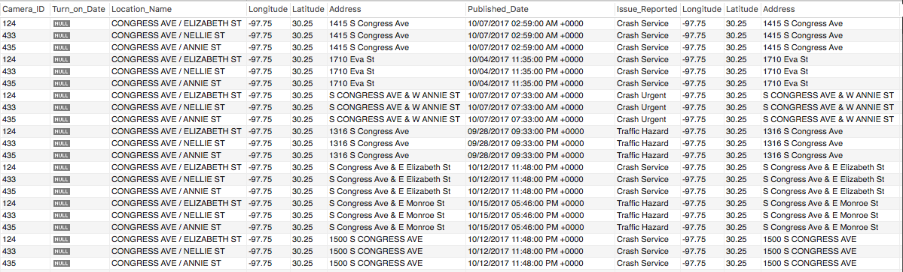

Analysis
Our project's purpose was to examine if there were any links between traffic camera locations and traffic incidents in Austin, Texas. We found two datasets that provided us with traffic camera locations and traffic incidents; utilizing this data we sought to find if there is an effect on traffic incidents and traffic cameras.